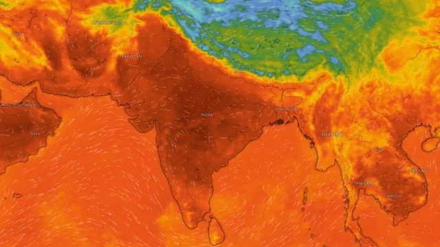

Temperature
Extreme heat is a health threat
Heat is not just weather.
THRIVE shows the danger first, then explains why the heat may harm people in the selected area.
~489,000
heat-related deaths per year
Global estimate based on studies from 2000-2019. Source: WHO
Selected area
New Delhi, Delhi, India
--
/100
Loading
Loading live weather and local risk indicators.
Data updated
A note from Team Tensor Forge
Heat can become dangerous before it looks dangerous.
Do not ignore extreme-heat warnings because the temperature does not look unusual. High humidity, strong sunlight, low wind and long exposure can place heavy stress on the human body. Stay hydrated, take breaks, avoid unnecessary outdoor exposure during dangerous periods and check on vulnerable people.
Current thermal intelligence
Not just temperature. Human thermal load.
Observed weather comes from Open-Meteo. Heat Index, PET and THRIVE risk are calculated indicators. Mortality and hospitalization values are model-based signals, not predictions of actual deaths or admissions.
Relative humidity
Wind speed
Solar radiation
Heat Index
Apparent temperature
PET approximation
Mortality-risk signal
Hospitalization-risk signal
Why is the score high?
Risk factors
THRIVE explains the score using the actual weather and prototype vulnerability factors.
GIS map
Selected-area heat risk and local resources.
SELECTED LOCATION
Loading free map…
Next 5 days
Thermal risk trajectory.
Who is at risk?
Vulnerability profile
What should happen now?
Actions for this risk level
Residents
Authorities
Share your information
Register your details with THRIVE.
Your information, selected location and the current THRIVE risk snapshot will be sent securely to our Formspree inbox. We will review the submission and handle any follow-up manually.
Heat mortality evidence
Heat can kill.
Heat-related mortality is not always recorded as "heatwave deaths." Extreme heat can worsen heart, lung and other illnesses, so simple death counts may not show the full impact.

~489,000 per year global heat-related deaths, estimated from 2000-2019 studies. Source: WHO.
3,775 deaths reported by India's NCDC for heat-related illness during 2015-2019. Historical reported count, not the current annual Indian death count.
730 deaths due to heat/sun stroke in India in 2022, from NCRB data shared by PIB in 2025. Reported official count, not total modeled heat-related mortality.
Common questions
THRIVE, explained plainly.
Quick answers about the map, risk score, alerts, data sources and what the platform can and cannot tell you.
What does the THRIVE score mean?
It is a modeled 0–100 heat-risk signal built from live weather variables and THRIVE's existing vulnerability logic. It is an early-warning indicator, not a diagnosis or a guaranteed prediction of harm.
Why can the risk be high when temperature alone is not extreme?
Humidity, wind, sunlight and other thermal-load inputs can change how hard the body must work to cool itself.
Where do the weather and map data come from?
THRIVE uses Open-Meteo for weather, OpenStreetMap/OpenLayers for mapping, and nearby resource search for hospitals and parks.
What happens after I submit my information?
Your submission is sent to THRIVE's Formspree inbox for manual review. THRIVE does not automatically place calls or send SMS messages from this form.
Can I print or share the current risk?
Yes. Use “Copy risk snapshot” for a text summary or “Print report” for a clean report-style printout.
Your data, explained plainly
Privacy Policy
THRIVE only asks for personal information when you choose to submit the registration form. This section explains what is collected, why, and how the information is handled.
What we collect. If you submit the Register form: your name, phone number, email address, selected location (place name and coordinates), and the heat-risk level and score shown to you at the moment you registered. Browsing THRIVE itself (map, weather, hospitals) does not require any personal information.
Why we collect it. To review your registration, understand the heat-risk context you submitted, and manually follow up when appropriate. THRIVE does not automatically send SMS messages or place voice calls from this registration form.
Who it is shared with. Your form submission is processed by Formspree and is available to the THRIVE team for manual handling. THRIVE does not sell your data or share it with advertisers.
How it is stored. Form submissions are stored by Formspree according to the settings and retention associated with the Formspree form, and may also be retained by the THRIVE team for manual follow-up. Review the Formspree account and privacy controls used by this project for current retention details.
Your choices. Submitting is optional and requires your explicit consent at submission. You can request correction or deletion of your information at any time by emailing teamtensorforge@gmail.com with the phone number or email you submitted.
Important note. THRIVE is a prototype early-warning aid, not an official emergency service. In a life-threatening emergency, always contact local emergency services directly rather than relying on THRIVE alerts alone.